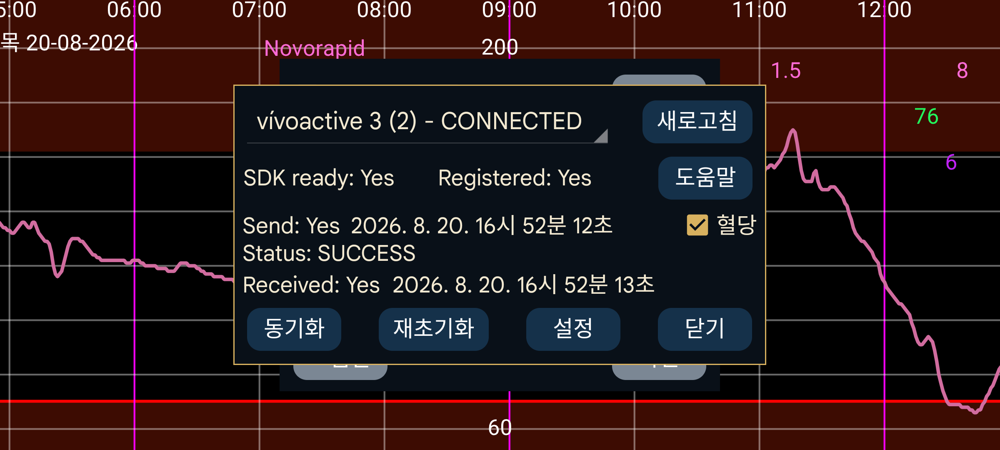

ar be de es fr hi it ja ko nl pl pt ru tr uk uz zh en
Kerfstok (https://apps.garmin.com/en-US/apps/b6348ccc-86d8-4780-8013-d9e19fed5260 (참조: https://www.juggluco.nl/Kerfstok/index.html)는 타사 앱을 허용하는 Garmin 스포츠 워치용 앱입니다. 1.6.0부터는 터치스크린이 없는 워치도 지원합니다. Kerfstok의 용도는 다음과 같습니다:
숫자를 입력하고 Juggluco와 교환;
Juggluco에서 받은 스트림 혈당 값 표시;
운동 중 속도와 거리와 함께 이 혈당 값을 표시합니다. 활동은 기록되며 Garmin Connect 앱에서 볼 수 있습니다.
이 워치 앱은 Bluetooth로 Juggluco에 연결하여 입력값을 교환하고 현재 혈당 값을 계속 표시할 수 있습니다.
문제 해결:
먼저 워치 이름에 "연결됨"이 표시되어야 합니다. 그렇지 않으면 Garmin Connect 앱에서 문제를 해결하십시오. 둘째, 워치에서 Kerfstok이 실행 중이어야 합니다.
때로는 워치와 휴대폰 사이의 연결이 끊어집니다.
전송 상태가 FAILURE_DURING_TRANSFER이면 다음 중 하나 이상을 수행할 수 있습니다:
- Bluetooth를 껐다 켠 다음 재초기화를 누릅니다;
- 워치를 재부팅합니다(거의 항상 성공하지만 여러 번 해야 할 때도 있음);
- 휴대폰을 재부팅합니다(마지막 방법).
다른 문제에는 Garmin Connect 앱을 강제 종료하고 다시 시작한 뒤 재초기화를 누르는 것이 도움이 될 수 있습니다.
연결은 정상인데 어떤 이유로 워치와 휴대폰의 입력값이 동기화되지 않았다면 동기화, 를 눌러 아직 보내지 않은 숫자를 서로 보내게 할 수 있습니다.
가끔 "전송 대기열" 이라는 버튼이 표시됩니다. 이는 워치로 아직 보내지 않은 메시지가 있다는 뜻입니다. 보통은 시간이 지나면 자동으로 전송되지만 간혹 중단될 수 있으며 전송 대기열 을 누르면 전송을 계속합니다. 다만 연결이 끊겨 전송되지 않은 경우에는 거의 도움이 되지 않습니다. 진행 중인 전송 중에 전송 대기열 을 누르면 연결이 끊어질 수 있습니다.
때로 "전송 대기열"이 나타날 때 휴대폰에서 워치로만 메시지가 흐르고 반대 방향으로는 흐르지 않는 연결 문제가 있습니다. "수신" 뒤의 시간이 "전송" 뒤의 시간보다 오래되었다면 이 경우입니다. 해결하려면 다음 중 하나 이상을 한 번 또는 여러 번 수행하십시오:
재초기화를 누릅니다;
Garmin Connect 앱을 강제 종료하고 다시 시작한 다음 재초기화를 누릅니다;
Bluetooth를 껐다 켭니다;
워치를 재부팅합니다;
휴대폰을 재부팅합니다.
위 방법을 모두 수행해도 연결 문제가 남은 적이 몇 번 있었고, Garmin Connect 를 다시 설치하거나 Garmin Connect의 앱 정보에서 저장공간을 지운 뒤 다시 열어 해결했습니다. Garmin Connect는 데이터를 인터넷 서버에 저장하므로 데이터를 잃지 않고 다시 설치할 수 있습니다. 데이터를 지운 뒤에는 다시 로그인할 필요조차 없었고 많은 권한만 다시 허용하면 됐습니다.
새로고침 새 정보(예: 재초기화나 동기화 후)로 이 대화상자를 다시 표시합니다.
"혈당" 을 선택하면 혈당 값을 워치로 보낼지 결정합니다.
구성: 다크 모드, 바로가기 및 ID를 설정합니다.
경고: Juggluco는 Kerfstok 하나와만 사용할 수 있습니다. 여러 워치의 Kerfstok이나 워치와 자전거 컴퓨터의 Kerfstok에 동시에 Juggluco를 연결할 수 없습니다.